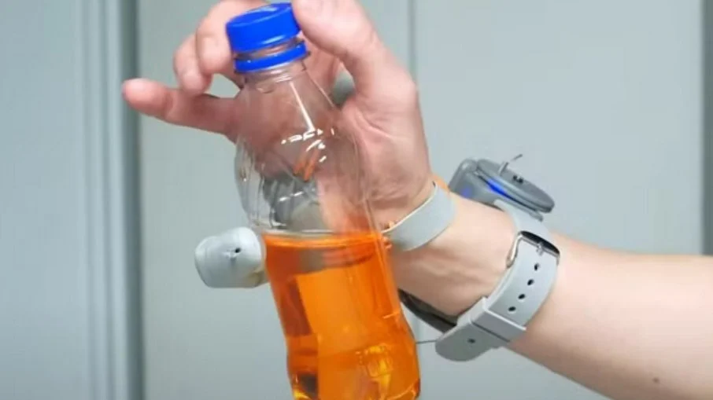
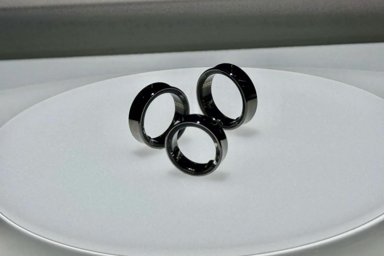

Cientistas criam 6° dedo robótico
Postado 11 de Junho de 2024 
Uma prótese que adiciona mais um polegar à mão foi desenvolvida por pesquisadores da Universidade de
Cambridge, na Inglaterra, para auxiliar no manuseio de objetos. O protótipo é chamado de "terceiro
polegar", e foi criado para ajudar na produtividade de pessoas com 10 dedos e colaborar com as
pessoas com deficiência (PcDs).
A revista científica Science Robotics publicou o resultado da prótese nesta semana. A equipe de
pesquisadores testou o proótico por cinco dias com quase 600 participantes, de idades entre três e
96 anos e de diversas origens demográficas. Entre essas pessoas, apenas quatro não conseguiram usar
o equipamento, pois não conseguiram ajustá-lo na mão ou pressionar os dedos dos pés.
“Estas tecnologias abrem novas oportunidades estimulantes que podem beneficiar a sociedade, mas é
vital que consideremos como podem ajudar todas as pessoas de forma igual, especialmente as
comunidades marginalizadas que são frequentemente excluídas da investigação e desenvolvimento de
inovação", disse a professora Tamar Makin, da Unidade de Cognição e Ciências do Cérebro do Conselho
de Pesquisa Médica (MRC) da Universidade de Cambridge, em comunicado.
A prótese é utilizada no lado oposto ao polegar biológico da palma da mão. O controle é realizado
por meio de um sensor de pressão colocado sob cada dedão do pé. Quando o dedo do pé direito exerce
pressão, o polegar é puxado através da mão; já a pressão do dedo do pé esquerdo move o polegar em
direção aos outros dedos. Assim, a amplitude do movimento do polegar é proporcional à pressão
aplicada, e ao liberar a pressão, o polegar retorna à posição original.
O que esperar do Galaxy Ring?
Postado 06 de Junho de 2024 
O lançamento do anel inteligente da Samsung está previsto para julho de 2024, então, até lá, algumas
coisas podem mudar. Mas, recentemente, Katie Collins, repórter especialista em Big Techs da CNet,
entrevistou Dr. Hon Pak, vice-presidente e chefe da equipe de saúde digital da Samsung, e coletou
algumas informações interessantes sobre o Ring.
Três cores
A Samsung afirmou que o design e as possibilidades de cores não estão completamente definidas. Entretanto, desde o início deste ano, apenas três cores foram apresentadas: dourado, prata e preto.Tamanhos
O Ring estará disponível em nove tamanhos, como foi relatado anteriormente, numerados de 13 a 21 (para usar os tamanhos tradicionais de anel), mas serão marcados de “Pequeno a Extra-Grande”. Collins também conseguiu descobrir o peso desses anéis: de 2,3 a 2,9 gramas. Leve o suficiente para não incomodar.Vida útil da bateria
A vida útil da bateria do Ring, pelo menos para os protótipos, é impressionante: de cinco a nove dias dependendo do tamanho do modelo. Leia maisPostagens Recentes
Elden Ring: Shadow of the Erdtree deve ter entre 30 a 40 horas de conteúdo inédito
No X, usuário fez um compilado sobre as informações já divulgadas sobre a expansão
Leia maisGTA 6 será lançado em 2025, confirma Rockstar
O aguardado trailer do novo GTA foi revelado em dezembro do ano passado, trazendo um breve olhar para a sequência e muitas novidades instigantes que atiçaram o hype dos fãs.
Leia mais